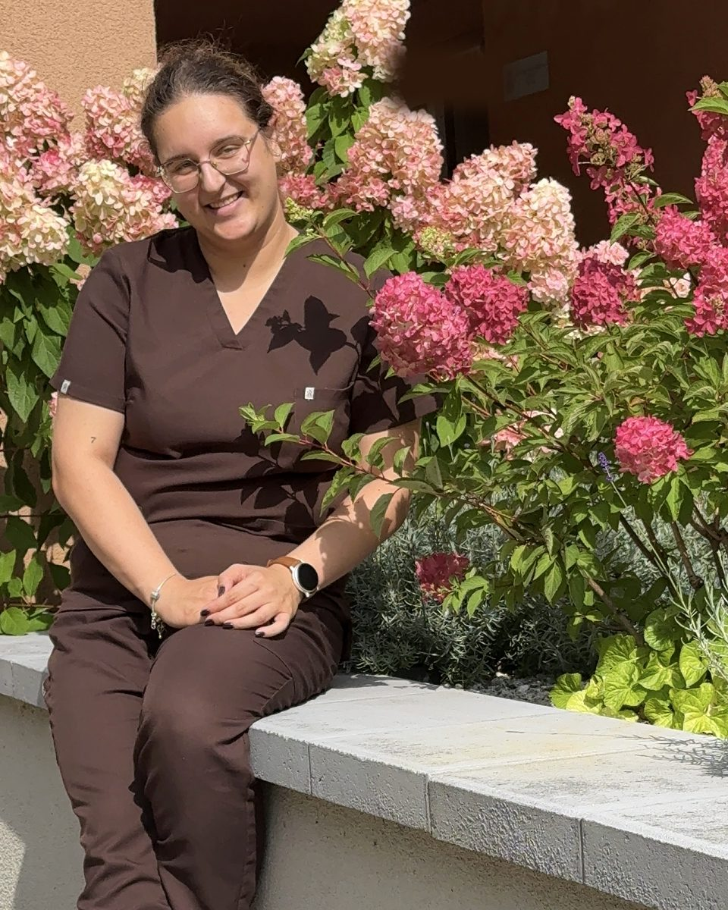

Individuali kineziterapija
Pokalbis apie jūsų savijautą ir tikslus, judėjimo vertinimas, pirmieji pratimai ir aiškus tolesnių žingsnių planas. Trukmė: 45 min. – 1 val. Vyksta jūsų namuose arba nuotoliu.
45 €
Individuali kineziterapija suaugusiems ir senjorams Prienuose: pusiausvyra, jėga, ištvermė ir saugesnė kasdienybė.

Savo tikslus pasirenkate jūs. Kartu sudarome planą, kaip prie jų artėti saugiai.
Dirbu su suaugusiais ir vyresnio amžiaus žmonėmis. Jei atpažįstate save bent viename iš šių aprašymų, verta pasikalbėti.
Įvertiname pusiausvyrą ir kojų jėgą, parenkame pratimus, kurie mažina griuvimų riziką.
Tai dažnai susiję su raumenų jėga. Jėgą galima lavinti ir vyresniame amžiuje, pradedant nuo lengvų krūvių.
Sudarome pratimų programą, suderintą su gydytojo rekomendacijomis, ir didiname krūvį palaipsniui.
Paaiškinu, kiek ir kaip judėti, kad būtų saugu ir tiktų jūsų savijautai.
Galite atvykti kartu. Parodysiu, kaip padėti namuose ir ko nedaryti.
Esu kineziterapeutė. Dirbu su suaugusiais ir senjorais, kuriems svarbu judėti lengviau, stipriau ir pasitikint savimi.
Man svarbiausia, kad pratimai turėtų prasmę jūsų kasdienybėje: ne „padaryti serijas“, o vėl lengvai atsikelti, nueiti, pasilenkti ar pakelti.
Dirbu globos namuose, todėl turiu nemažai patirties su senyvo amžiaus žmonėmis. Rengiu pranešimus apie judėjimą ir sveikatą, pavyzdžiui, „Ilgo sėdėjimo poveikis sveikatai ir kaip jį mažinti“, ir skatinu senjorus judėti.
Viskas prasideda nuo individualios konsultacijos. Po jos kartu nusprendžiame, ko jums reikia toliau.
Pokalbis apie jūsų savijautą ir tikslus, judėjimo vertinimas, pirmieji pratimai ir aiškus tolesnių žingsnių planas. Trukmė: 45 min. – 1 val. Vyksta jūsų namuose arba nuotoliu.
45 €
Į individualią kineziterapiją įeina du vertinimai:
Paprasti judesių testai parodo, kaip sekasi atsistoti, eiti ir išlaikyti pusiausvyrą, ir ką verta stiprinti.
Įvertinu, kiek stabiliai stovite ir einate, ir parenku pratimus griuvimų prevencijai.
Jums nereikia ruoštis ar „būti geros formos“. Viską darote savo tempu ir bet kada galite sustoti.
Papasakojate, kaip jaučiatės, ką jau bandėte ir ką norite vėl gebėti daryti. Pasiimkite gydytojo išrašus ir vaistų sąrašą, jei turite.
Atliekame paprastus veiksmus: atsistojame nuo kėdės, pastovime, pavaikštome. Matau, kur judesiai sklandūs, o kur reikia palaikymo.
Išbandome pirmuosius pratimus kartu. Gaunate aiškų tolesnių žingsnių planą ir pratimus, kuriuos galėsite kartoti namuose.
Klausiu, ką norite gebėti daryti, o ne tik kas skauda. Pratimai parenkami pagal tai.
Kiekvieną pratimą galima palengvinti arba sunkinti. Jei per sunku, keičiame.
Sakau, ką darome ir kodėl, be sunkių terminų. Jei terminas reikalingas, jį išaiškinu.
Gaunate kelis pratimus, kuriuos realu padaryti kasdien, o ne ilgą sąrašą, kuris lieka nepradėtas.
Svetainėje pateikta informacija nepakeičia gydytojo ar kito specialisto konsultacijos. Rezultatai priklauso nuo sveikatos būklės ir nuo to, kaip reguliariai atliekami pratimai, todėl konkrečių rezultatų neperspėju.
Pradedame nuo lengvų krūvių ir didiname tik tada, kai jaučiatės saugiai. Jei kažkas per sunku ar nemalonu, pasakykite, ir pratimą pakeisime.
Patogius drabužius ir sandarius batus ar kojines neslidžiais padais. Jei turite, atsineškite gydytojo išrašus, tyrimų rezultatus ir vaistų sąrašą.
Taip, artimasis gali atvykti kartu. Jis galės stebėti ir išmokti, kaip padėti namuose.
Ne, gydytojo siuntimas nereikalingas. Jei turite gydytojo išrašų ar rekomendacijų, atsineškite, tai padės parinkti pratimus.
Dažniausiai taip, tik pratimai parenkami atsargiau. Apie ligas ir vaistus pasakykite vizito metu. Kai kuriais atvejais prieš pradedant gali prireikti gydytojo nuomonės, tai aptarsime.
Vienodo atsakymo nėra. Tai priklauso nuo jūsų tikslų ir savijautos. Po pirmos konsultacijos pasakysiu, ko tikėtis, o sprendimą priimate jūs.
Galiu atvykti į jūsų namus, o jei patogiau, galima konsultuotis nuotoliu. Dėl vietos ir laiko susitarsime registruojantis.
Parašykite el. paštu arba užpildykite trumpą formą. Atsakysiu ir suderinsime laiką bei vietą.
Duomenų valdytoja: Emilija Jankauskaitė.